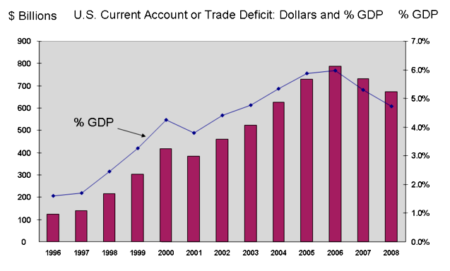
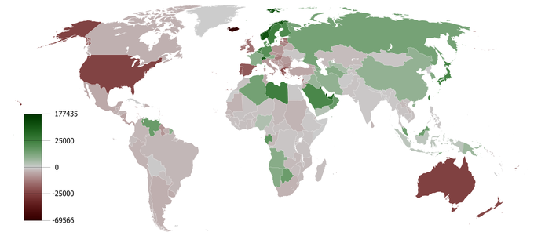
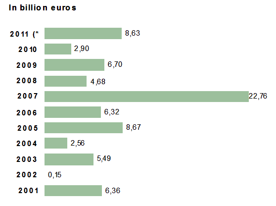
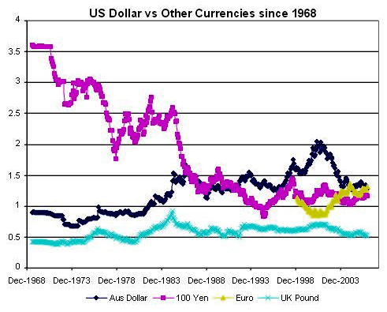
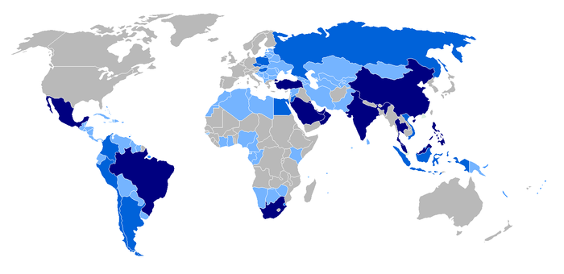
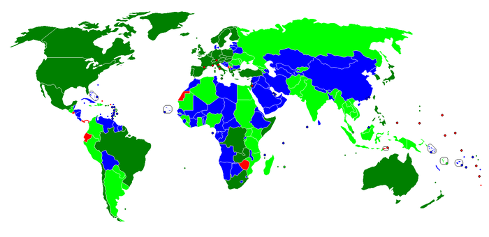
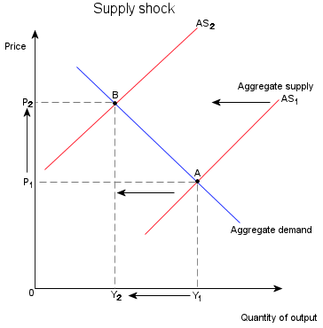
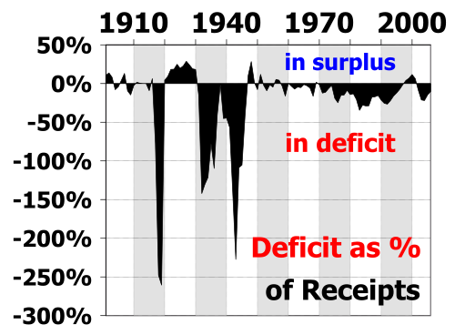

Table of Contents
32. Open Economy Macroeconomics
32.1. Capital Flows
32.1.1. The Balance of Payments
32.1.2. The Current Account
32.1.3. The Financial Account
32.1.4. The Capital Account
32.1.5. Reason for a Zero Balance
32.2. Exchange Rates
32.2.1. Introducing Exchange Rates
32.2.2. Finding an Equilibrium Exchange Rate
32.2.3. Real Versus Nominal Rates
32.2.4. Exchange Rate Policy Choices
32.2.5. Exchange Rate Systems
32.2.6. Fixed Exchange Rates
32.2.7. Managed Float
32.3. Equilibrium
32.3.1. Open Economy Equilibrium
32.3.2. Impacts of Policies and Events on Equilibrium
32.3.3. Effect of a Government Budget Deficit on Investment and Equilibrium
32. Open Economy Macroeconomics
32.1. Capital Flows
32.1.1. The Balance of Payments
The balance of payments (BOP) is a record of all monetary transactions between a country and the rest of the world.
Learning Objective
Explain the components and importance of the balance of payments
Key Points
- Whenever a country receives funds from a foreign source, a credit is recorded on the balance of payments. Whenever a country has an outflow of funds, it is recorded as a debit on the balance of payments.
- When all components of the BOP accounts are included they must sum to zero with no overall surplus or deficit.
- BOP=Current Account+Financial Account+Capital Account+Balancing Item.
- The current account records the flow of income from one country to another.
- The financial account records the flow of assets from one country to another.
- The capital account is typically much smaller than the other two and includes miscellaneous transfers that do not affect national income.
Key Term
- balance of payments
- A record of all monetary transactions between a country and the rest of the world
The balance of payments (BOP) is a record of all monetary transactions between a country and the rest of the world. This includes payments for the country's exports and imports, the sale and purchase of assets, and financial transfers. The BOP is given for a specific period of time (usually a year) and in terms of the domestic currency.
Whenever a country receives funds from a foreign source, a credit is recorded on the balance of payments. Sources of funds include exports, the receipt of loans or investment, and income from foreign assets. Whenever a country has an outflow of funds, such as when the country imports goods and services or when it invests in foreign assets, it is recorded as a debit on the balance of payments.
When all components of the BOP accounts are included they must sum to zero with no overall surplus or deficit. For example, if a country is importing more than it exports, its trade balance will be in deficit, but the shortfall will have to be counterbalanced in other ways – such as by funds earned from its foreign investments, by running down central bank reserves, or by receiving loans from other countries .
{kind=link}
The chart shows the current account deficit of the U.S., both in dollars and as a percent of GDP. Deficits in the current account must be offset by surpluses in the financial and capital accounts.
Components of the Balance of Payments
The BOP can be expressed as:
The current account records the flow of income from one country to another. It includes the balance of trade (net earnings on exports minus payments for imports), factor income (earnings on foreign investments minus payments made to foreign investors), and cash transfers.
The financial account records the flow of assets from one country to another. It is composed of foreign direct investment, portfolio investment, other investment, and reserve account flows.
The capital account is typically much smaller than the other two and includes miscellaneous transfers that do not affect national income. Debt forgiveness would affect the capital account, as would the purchase of non-financial and non-produced assets such as the rights to natural resources or patents.
The balancing item is simply an amount that accounts for any statistical errors and ensures that the total balance of payments is zero.
32.1.2. The Current Account
The current account represents the sum of net exports, factor income, and cash transfers.
Learning Objective
Calculate the current account
Key Points
- The balance of trade is the difference between a nation's exports of goods and services and its imports of goods and services. A nation has a trade deficit if its imports exceeds its exports.
- The net factor income records a country's inflow of income and outflow of payments. Income refers not only to the money received from investments made abroad but also to remittances.
- Cash transfers take place when a certain foreign country simply provides currency to another country with nothing received as a return.
- A country's current account can by calculated by the following formula: CA = (X-M)+NY+NCT.
Key Terms
- credit
- An addition to certain accounts.
- balance of trade
- The difference between the monetary value of exports and imports in an economy over a certain period of time.
- debit
- A sum of money taken out of an account.
The current account represents the sum of the balance of trade (net earnings on exports minus payments for imports), factor income (earnings on foreign investments minus payments made to foreign investors), and cash transfers. It is called the current account as it covers transactions in the "here and now" – those that don't give rise to future claims.
The balance of trade is the difference between a nation's exports of goods and services and its imports of goods and services. A nation has a trade deficit if its imports exceed its exports. Because the trade balance is typically the largest component of the current account, a current account surplus is usually associated with positive net exports. This, however, is not always the case. Secluded economies like Australia are more likely to feature income deficits larger than their trade surplus.
The net factor income records a country's inflow of income and outflow of payments. Income refers not only to the money received from investments made abroad (note: the investments themselves are recorded in the capital account but income from investments is recorded in the current account) but also to the money sent by individuals working abroad, known as remittances, to their families back home. If the income account is negative, the country is paying more than it is taking in interest, dividends, etc.
Cash transfers take place when a certain foreign country simply provides currency to another country with nothing received as a return. Typically, such transfers are done in the form of donations, aids, or official assistance.
Calculating the Current Account
Normally, the current account is calculated by adding up the 4 components of current account: goods, services, income and cash transfers.
Goods are traded by countries all over the world. When ownership of a good is transferred from a local country to a foreign country, this is called an export. When a good's ownership is transferred from a foreign country to a local country, this is called an import. In calculating the current account, exports are marked as a credit (inflow of money) and imports are marked as a debit (outflow of money).
Services can also be traded by countries. This happens frequently in the case of tourism. When a tourist from a local country visits a foreign country, the local country is consuming the foreign services and this is counted as an import. Likewise, when a foreign tourist comes and enjoys the services of a local country, this is counted as an export. Other services can also be transferred between countries, such as when a financial adviser in one country assists clients in another.
A credit of income happens when a domestic individual or company receives money from a foreign individual or company. This would typically take place when a domestic investor receives dividends from an investment made in a foreign country, or when a worker abroad sends remittances back to the local country. Likewise, a debit in the income account takes place when a foreign entity receives money from an investment in the local economy.
Finally, a credit in the cash transfers column would be a gift of aid from a foreign country to the domestic country. Similarly, a debit in the cash transfers column might be the provision of official assistance by the local economy to a foreign economy.
Thus, a country's current account can by calculated by the following formula:
CA = (X-M)+NY+NCT
Where CA is the current account, X and M and the export and import of goods and services respectively, NY is net income from abroad, and NCT is the net current transfers. When the sum of these four components is positive, the current account has a surplus.
{kind=link}
The map shows the per capita current accounts surpluses and deficits of countries around the world from 1980 to 2008. Deeper red implies a higher per capita deficit, while deeper green implies a higher per capita surplus.
32.1.3. The Financial Account
The financial account measures the net change in ownership of national assets.
Learning Objective
Calculate the financial account
Key Points
- A financial account surplus means that buyers in the rest of the world are purchasing more of a country's assets than buyers in the domestic economy are spending on rest-of-world assets.
- The financial account has four components: foreign direct investment, portfolio investment, other investment, and reserve account flows.
- Foreign direct investment (FDI) refers to long term capital investment such as the purchase or construction of machinery, buildings, or even whole manufacturing plants.
- Portfolio investment refers to the purchase of shares and bonds.
- Other investment includes capital flows into bank accounts or provided as loans.
- The reserve account is operated by a nation's central bank to buy and sell foreign currencies.
Key Terms
- interest rate
- The percentage of an amount of money charged for its use per some period of time (often a year).
- central bank
- The principal monetary authority of a country or monetary union; it normally regulates the supply of money, issues currency and controls interest rates.
The financial account (also known as the capital account under some balance of payments systems) measures the net change in ownership of national assets. When financial account has a positive balance, we say that there is a financial account surplus. A financial account surplus means that the net ownership of a country's assets is flowing out of a country - that is, foreign buyers are purchasing more domestic assets than domestic buyers are purchasing of assets from the rest of the world. Likewise, we say that there is a financial account deficit when the financial account has a negative balance. This occurs when domestic buyers are purchasing more foreign assets than foreign buyers are purchasing of domestic assets. For example, a financial accounts deficit would exist when County A's citizens buy \$200 million worth of real estate overseas, while overseas investors purchase only \$100 million worth of real estate within Country A.
Calculating the Financial Account
The financial account has four components: foreign direct investment, portfolio investment, other investment, and reserve account flows.
Foreign direct investment (FDI) refers to long term capital investment such as the purchase or construction of machinery, buildings, or even whole manufacturing plants. If foreigners are investing in a country, that is an inbound flow and counts as a surplus item on the financial account. If a nation's citizens are investing in foreign countries, there is an outbound flow that will count as a deficit. After the initial investment, any yearly profits not re-invested will flow in the opposite direction, but will be recorded in the current account rather than the financial account .
{kind=link}
Austria has experienced a surplus of foreign direct investment: more foreign investors invest in Austria than Austrian investors do in the rest of the world. This contributes to a financial account surplus.
Portfolio investment refers to the purchase of shares and bonds. It is sometimes grouped together with "other" as short term investment. As with FDI, the income derived from these assets is recorded in the current account; the financial account entry will just be for any buying or selling of the portfolio assets in the international financial markets.
Other investment includes capital flows into bank accounts or provided as loans. Large short term flows between accounts in different nations are commonly seen when the market is able to take advantage of fluctuations in interest rates and/or the exchange rate between currencies. Sometimes this category can include the reserve account.
The reserve account is operated by a nation's central bank to buy and sell foreign currencies; it can be a source of large capital flows to counteract those originating from the market. Inbound capital flows (from sales of the account's foreign currency), especially when combined with a current account surplus, can cause a rise in value (appreciation) of a nation's currency, while outbound flows can cause a fall in value (depreciation). If a government (or, if authorized to operate independently in this area, the central bank itself) does not consider the market-driven change to its currency value to be in the nation's best interests, it can intervene. Such intervention affects the financial account. Purchases of foreign currencies, for example, will increase the deficit and vis versa.
To calculate the total surplus or deficit in the financial account, sum the net change in FDI, portfolio investment, other investment, and the reserve account.
Interest Rates and the Financial Account
The outflow or inflow of assets in the financial account depends in large part on the domestic interest rate and how it compares to interest rates in other countries. A higher central bank interest rate will tend to increase the interest rate on all domestic financial assets, such as bonds, loans, and government securities. In general, if interest rates are higher in one country than another, an investor would prefer to purchase financial assets in the country with the higher interest rate.
An increase in the domestic interest rate will therefore cause foreign investors to purchase more domestic assets, creating a financial account surplus. Likewise, a fall in the domestic interest rate will cause domestic investors to purchase foreign assets in place of domestic assets, and will cause a financial account deficit.
32.1.4. The Capital Account
The capital account acts as a sort of miscellaneous account, measuring non-produced and non-financial assets, as well as capital transfers.
Learning Objective
Calculate the Capital Account
Key Points
- A deficit in the capital account means that money is flowing out of a country and the country is accumulating foreign assets.
- The capital account can be split into two categories: non-produced and non-financial assets, and capital transfers.
- Non-produced and non-financial assets include things like drilling rights, patents, and trademarks.
- Capital transfers include debt forgiveness, the transfer of goods and financial assets by migrants leaving or entering a country, and the transfer of ownership on fixed assets.
Key Term
- debt forgiveness
- The partial or total writing down of debt owed by individuals, corporations, or nations.
There are two common definitions of the capital account in economics. The first is a broad interpretation that reflects the net change in ownership of national assets. Under the International Monetary Fund (IMF) definition, however, most of these asset flows are captured in the financial account. Instead, the capital account acts as a sort of miscellaneous account, measuring non-produced and non-financial assets, as well as capital transfers. The capital account is normally much smaller than the financial and current accounts.
Like the financial account, a deficit in the capital account means that money is flowing out of a country and the country is accumulating foreign assets. Likewise, a surplus in the capital account means that a money is flowing into a country and the country is selling (or otherwise disposing of) non-produced, non-financial assets.
Calculating the Capital Account
The capital account can be split into two categories: non-produced and non-financial assets, and capital transfers. Non-produced and non-financial assets include things like drilling rights, patents, and trademarks. For example, if a domestic company acquires the rights to mineral resources in a foreign country, there is an outflow of money and the domestic country acquires an asset, creating a capital account deficit .
If a U.S. company sold its rights to drill for natural gas off the southern coast of the U.S., it would be recorded as a credit in the capital account.
Capital transfers include debt forgiveness, the transfer of goods and financial assets by migrants leaving or entering a country, the transfer of ownership on fixed assets, the transfer of funds received to the sale or acquisition of fixed assets, gift and inheritance taxes, death levies, and uninsured damage to fixed asset. For example, if the domestic country forgives a loan made to a foreign country, this transfer creates a deficit in the capital account.
Thus, the balance of the capital account is calculated as the sum of the surpluses or deficits of net non-produced, non-financial assets, and net capital transfers.
32.1.5. Reason for a Zero Balance
Equilibrium in the market for a country's currency implies that the balance of payments is equal to zero.
Learning Objective
Discuss the long term equilibrium of a country's balance of payments
Key Points
- Equilibrium in the foreign exchange market implies that the quantity of currency demanded = quantity of currency supplied .
- The quantity of a currency demanded is from two sources: exports and rest-of-world purchases of domestic assets. The quantity supplied of a currency is also from two sources: imports and domestic purchases of rest-of-world assets.
- Therefore, exports + (rest-of-world purchases of domestic assets) = imports + (domestic purchases or rest-of-world assets).
- Finally, this means that exports - imports = (domestic purchases of rest-of-world assets) - (rest-of-world purchases of domestic assets).
- In other words, the current account balances out the financial account and the balance of payments is zero.
Key Terms
- foreign exchange
- The changing of currency from one country for currency from another country.
- net exports
- The difference between the monetary value of exports and imports.
Capital Flows
Trade within a country differs in one important way from trade between countries: unless the two nations share a common currency, any trade requires that countries go through the foreign exchange market to trade currency, in addition to trading goods and services. For example, imagine that buyers in France purchase oranges produced in Chile. The French buyers use the euro in order to make the purchase but the Chilean orange producers must be paid with the Chilean peso. This exchange between France and Chile requires that the firms exchange euros for pesos.
In general, there are two reasons for demanding a country's currency: to purchase assets within the country and to purchase a country's exports - that is, the goods and services produced within that country. The country's currency is supplied when it is used to purchase foreign currencies. This also happens for two reasons: to purchase assets in other countries and to import goods or services from other countries.
Imaging that we are analyzing Italy's economy and its currency transactions with the rest of the world. If an American buyer wishes to purchase bonds issued by an Italian corporation, she becomes part of the world demand for euros to buy Italian assets. Adding the demand for exports to the demand for assets outside of a country, we get the total demand for a country's currency.
Likewise, a country's currency is supplied when it is used to purchase currencies in the rest of the world. Italian euros, for eample, are supplied when Italian consumers or firms import goods and services from the rest of the world. Italian euros are also supplied when Italian purchasers acquire assets from other countries.
Equilibrium and Zero Balance
When a country's balance of payments is equal to zero, there is equilibrium in the market for that country's currency. Equilibrium occurs when:
Quantity of currency demanded = quantity of currency supplied
We have already seen that the quantity of currency demanded is equal to the demand for exports and demand for domestic assets. The quantity of currency supplied is equal to the demand for imports and the domestic demand for foreign assets. Thus, we can rewrite the relationship:
Exports + (foreign purchases of domestic assets) = imports + (domestic purchases of foreign assets)
Finally, we can rearrange the above formula as:
Exports - imports = (domestic purchases of foreign assets) - (foreign purchases of domestic assets)
The left-hand term is net exports - the difference between the amount of goods and services a country exports and the amount that it imports. We refer to this difference as the current account. When a country exports more goods than it imports, this number is positive and we say that the country has a current accounts surplus. When a country imports more than it exports this number is negative and we say that the country has a current accounts deficit.
The right-hand term is the difference between the foreign assets that people within the country purchase and the domestic assets that are purchased by foreigners. This is called the financial account. These assets include the reserve account (the foreign exchange market operations of a nation's central bank), along with loans and investments between the country and the rest of world (but not the future regular repayments/dividends that the loans and investments yield; those are earnings and will be recorded in the current account). The financial account is also sometimes used in a narrower sense that excludes the foreign exchange operation of the central bank. When a country buys more foreign assets that other countries buy of its assets, this balance is positive and there is a financial account surplus.
If the above equation holds true, then any current account surplus must be matched by a financial account deficit, and vice versa. This holds true when a country's currency market is in equilibrium and there are no external currency controls.
{kind=link}
Exchange rates are constantly fluctuating to ensure that the quantity of currency supplied equals the quantity demanded. Because of this, the inflows and outflows of money are equal, creating a balance of payments equal to zero.
32.2. Exchange Rates
32.2.1. Introducing Exchange Rates
In finance, an exchange rate between two currencies is the rate at which one currency will be exchanged for another.
Learning Objective
Explain the concept of a foreign exchange market and an exchange rate
Key Points
- Exchange rates are determined in the foreign exchange market, which is open to a wide range of buyers and sellers where currency trading is continuous.
- In the retail currency exchange market, a different buying rate and selling rate will be quoted by money dealers.
- The foreign exchange rate is also regarded as the value of one country's currency in terms of another currency.
Key Term
- exchange rate
- The amount of one currency that a person or institution defines as equivalent to another when either buying or selling it at any particular moment.
In finance, an exchange rate (also known as a foreign-exchange rate, forex rate, or rate) between two currencies is the rate at which one currency will be exchanged for another. It is also regarded as the value of one country's currency in terms of another currency . For example, an inter-bank exchange rate of 91 Japanese yen (JPY, ¥) to the United States dollar (USD, US\$) means that ¥91 will be exchanged for each US\$1 or that US\$1 will be exchanged for each ¥91.
In the retail currency exchange market, a different buying rate and selling rate will be quoted by money dealers.
Exchange rates are determined in the foreign exchange market, which is open to a wide range of buyers and sellers where currency trading is continuous. The spot exchange rate refers to the current exchange rate. The forward exchange rate refers to an exchange rate that is quoted and traded today, but for delivery and payment on a specific future date.
How the Foreign Exchange Market Works
In the retail currency exchange market, a different buying rate and selling rate will be quoted by money dealers. Most trades are to or from the local currency. The buying rate is the rate at which money dealers will buy foreign currency, and the selling rate is the rate at which they will sell the currency. The quoted rates will incorporate an allowance for a dealer's margin (or profit) in trading, or else the margin may be recovered in the form of a commission or in some other way.
Different rates may also be quoted for different kinds of exchanges, such as for cash (usually notes only), a documentary form (such as traveler's checks), or electronic transfers (such as a credit card purchase). There is generally a higher exchange rate on documentary transactions (such as for traveler's checks) due to the additional time and cost of clearing the document, while cash is available for resale immediately.
32.2.2. Finding an Equilibrium Exchange Rate
There are two methods to find the equilibrium exchange rate between currencies; the balance of payment method and the asset market model.
Learning Objective
Differentiate between the Balance of Payment and Asset Market Models
Key Points
- The balance of payment model holds that foreign exchange rates are at an equilibrium level if they produce a stable current account balance.
- The balance of payments model focuses largely on tradeable goods and services, ignoring the increasing role of global capital flows.
- The asset market model of exchange rate determination states that the exchange rate between two currencies represents the price that just balances the relative supplies of, and demand for, assets denominated in those currencies. This includes financial assets.
Key Terms
- depreciate
- To reduce in value over time.
- purchasing power parity
- A theory of long-term equilibrium exchange rates based on relative price levels of two countries.
Countries have a vested interest in the exchange rate of their currency to their trading partner's currency because it affects trade flows. When the domestic currency has a high value, its exports are expensive. This leads to a trade deficit, decreased production, and unemployment. If the currency's value is low, imports can be too expensive though exports are expected to rise.
Purchasing Power Parity
Purchasing power parity is a way of determining the value of a product after adjusting for price differences and the exchange rate. Indeed, it does not make sense to say that a book costs \$20 in the US and £15 in England: the comparison is not equivalent. If we know that the exchange rate is £2/\$, the book in England is selling for \$30, so the book is actually more expensive in England
If goods can be freely traded across borders with no transportation costs, the Law of One Price posits that exchange rates will adjust until the value of the goods are the same in both countries. Of course, not all products can be traded internationally (e.g. haircuts), and there are transportation costs so the law does not always hold.
The concept of purchasing power parity is important for understanding the two models of equilibrium exchange rates below.
Balance of Payments Model
The balance of payments model holds that foreign exchange rates are at an equilibrium level if they produce a stable current account balance. A nation with a trade deficit will experience a reduction in its foreign exchange reserves, which ultimately lowers, or depreciates, the value of its currency. If a currency is undervalued, its nation's exports become more affordable in the global market while making imports more expensive. After an intermediate period, imports will be forced down and exports will rise, thus stabilizing the trade balance and bringing the currency towards equilibrium.
Asset Market Model
Like purchasing power parity, the balance of payments model focuses largely on tangible goods and services, ignoring the increasing role of global capital flows . In other words, money is not only chasing goods and services, but to a larger extent, financial assets such as stocks and bonds. The flows from transactions involving financial assets go into the capital account item of the balance of payments, thus balancing the deficit in the current account. The increase in capital flows has given rise to the asset market model.
The key difference between the balance of payments and asset market models is that the former includes financial assets, such as stock, in its calculation.
The asset market model views currencies as an important element in finding the equilibrium exchange rate. Asset prices are influenced mostly by people's willingness to hold the existing quantities of assets, which in turn depends on their expectations on the future worth of the assets. The asset market model of exchange rate determination states that the exchange rate between two currencies represents the price that just balances the relative supplies of, and demand for, assets denominated in those currencies. These assets are not limited to consumables, such as groceries or cars. They include investments, such as shares of stock that is denominated in the currency, and debt denominated in the currency.
32.2.3. Real Versus Nominal Rates
Real exchange rates are nominal rates adjusted for differences in price levels.
Learning Objective
Calculate the nominal and real exchange rates for a set of currencies
Key Points
- The measure of the differences in price levels is Purchasing Power Parity. The concept of purchasing power parity allows one to estimate what the exchange rate between two currencies would have to be in order for the exchange to be on par with the purchasing power of the two countries' currencies.
- If all goods were freely tradable, and foreign and domestic residents purchased identical baskets of goods, purchasing power parity (PPP) would hold for the exchange rate and price levels of the two countries, and the real exchange rate would always equal 1.
- When you go online to find the current exchange rate of a currency, it is generally expressed in nominal terms.
- Changes in the nominal value of currency over time can happen because of a change in the value of the currency or because of the associated prices of the goods and services that the currency is used to buy.
- To calculate the nominal exchange rate, simply measure how much of one currency is necessary to acquire one unit of another. The real exchange rate is the nominal exchange rate times the relative prices of a market basket of goods in the two countries.
Key Terms
- nominal exchange rate
- The amount of currency you can receive in exchange for another currency.
- real exchange rate
- The purchasing power of a currency relative to another at current exchange rates and prices.
Currency is complicated and its value can be measured in several different ways. For example, a currency can be measured in terms of other currencies, or it can be measured in terms of the goods and services it can buy. An exchange rate between two currencies is defined as the rate at which one currency will be exchanged for another. However, that rate can be interpreted through different perspectives. Below are descriptions of the two most common means of describing exchange rates.
Nominal Exchange Rate
A nominal value is an economic value expressed in monetary terms (that is, in units of a currency). It is not influenced by the change of price or value of the goods and services that currencies can buy. Therefore, changes in the nominal value of currency over time can happen because of a change in the value of the currency or because of the associated prices of the goods and services that the currency is used to buy.
When you go online to find the current exchange rate of a currency, it is generally expressed in nominal terms. The nominal rate is set on the open market and is based on how much of one currency another currency can buy.
Real Exchange Rate
The real exchange rate is the purchasing power of a currency relative to another at current exchange rates and prices. It is the ratio of the number of units of a given country's currency necessary to buy a market basket of goods in the other country, after acquiring the other country's currency in the foreign exchange market, to the number of units of the given country's currency that would be necessary to buy that market basket directly in the given country. The real exchange rate is the nominal rate adjusted for differences in price levels.
A measure of the differences in price levels is Purchasing Power Parity (PPP) . The concept of purchasing power parity allows one to estimate what the exchange rate between two currencies would have to be in order for the exchange to be on par with the purchasing power of the two countries' currencies. Using the PPP rate for hypothetical currency conversions, a given amount of one currency has the same purchasing power whether used directly to purchase a market basket of goods or used to convert at the PPP rate to the other currency and then purchase the market basket using that currency.
Purchasing Power Parity evaluates and compares the prices of goods in different countries, such as groceries. PPP is then used to help determine real exchange rates.
If all goods were freely tradable, and foreign and domestic residents purchased identical baskets of goods, purchasing power parity (PPP) would hold for the exchange rate and price levels of the two countries, and the real exchange rate would always equal 1. However, since these assumptions are almost never met in the real world, the real exchange rate will never equal 1.
Calculating Exchange Rates
Imagine there are two currencies, A and B. On the open market, 2 A's can buy one B. The nominal exchange rate would be A/B 2, which means that 2 As would buy a B. This exchange rate can also be expressed as B/A 0.5.
The real exchange rate is the nominal exchange rate times the relative prices of a market basket of goods in the two countries. So, in this example, say it take 10 A's to buy a specific basket of goods and 15 Bs to buy that same basket. The real exchange rate would be the nominal rate of A/B (2) times the price of the basket of goods in B (15), and divide all that by the price of the basket of goods expressed in A (10). In this case, the real A/B exchange rate is 3.
32.2.4. Exchange Rate Policy Choices
A government should consider its economic standing, trade balance, and how it wants to use its policy tools when choosing an exchange rate regime.
Learning Objective
Explain the factors countries consider when choosing an exchange rate policy
Key Points
- A free floating exchange rate increases foreign exchange volatility, which can be a significant issue for developing economies since most of their liabilities are denominated in other currencies.
- Floating exchange rates automatically adjust to trade imbalances while fixed rates do not.
- A big drawback of adopting a fixed-rate regime is that the country cannot use its monetary or fiscal policies with a free hand. Because these tools are reserved for preserving the fixed rate, countries can't use its monetary or fiscal policies to address other economic issues.
Key Terms
- fixed exchange rate
- A system where a currency's value is tied to the value of another single currency, to a basket of other currencies, or to another measure of value, such as gold.
- floating exchange rate
- A system where the value of currency in relation to others is allowed to freely fluctuate subject to market forces.
When a country decides on an exchange rate regime, it needs to take several important things in account. Unfortunately, there is no system that can achieve every possible beneficial outcome; there is a trade-off no matter what regime a nation picks. Below are a few considerations a country needs to make when choosing a regime.
Stage of Economic Development
A free floating exchange rate increases foreign exchange volatility, which can be a significant issue for developing economies . Developing economies often have the majority of their liabilities denominated in other currencies instead of the local currency. Businesses and banks in these types of economies earn their revenue in the local currency but have to convert it to another currency to pay their debts. If there is an unexpected depreciation in the local currency's value, businesses and banks will find it much more difficult to settle their debts. This puts the entire economy's financial sector stability in danger.
{kind=link}
The developing countries, marked in light blue, may prefer a fixed or managed exchange rate to a floating exchange rate. This is because sudden depreciation in their currency value poses a significant threat to the stability of their economies.
Balance of Payments
Flexible exchange rates serve to adjust the balance of trade. When a trade deficit occurs in an economy with a floating exchange rate, there will be increased demand for the foreign (rather than domestic) currency which will increase the price of the foreign currency in terms of the domestic currency. That in turn makes the price of foreign goods less attractive to the domestic market and decreases the trade deficit. Under fixed exchange rates, this automatic re-balancing does not occur.
Monetary and Fiscal Policy
A big drawback of adopting a fixed-rate regime is that the country cannot use its monetary or fiscal policies with a free hand. In general, fixed-rates are not established by law, but are instead maintained through government intervention in the market. The government does this through the buying and selling of its reserves, adjusting its interest rates, and altering its fiscal policies. Because the government must commit its monetary and fiscal tools to maintaining the fixed rate of exchange, it cannot use these tools to address other macroeconomics conditions such as price level, employment, and recessions resulting from the business cycle.
32.2.5. Exchange Rate Systems
The three major types of exchange rate systems are the float, the fixed rate, and the pegged float.
Learning Objective
Differentiate common exchange rate systems
Key Points
- A floating exchange rate or fluctuating exchange rate is a type of exchange rate regime wherein a currency's value is allowed to freely fluctuate according to the foreign exchange market.
- A fixed exchange-rate system (also known as pegged exchange rate system) is a currency system in which governments try to maintain their currency value constant against a specific currency or good.
- Pegged floating currencies are pegged to some band or value, either fixed or periodically adjusted. These are a hybrid of fixed and floating regimes.
Key Terms
- pegged float exchange rate
- A currency system that fixes an exchange rate around a certain value, but still allows fluctuations, usually within certain values, to occur.
- fixed exchange rate
- A system where a currency's value is tied to the value of another single currency, to a basket of other currencies, or to another measure of value, such as gold.
- floating exchange rate
- A system where the value of currency in relation to others is allowed to freely fluctuate subject to market forces.
- exchange rate regime
- The way in which an authority manages its currency in relation to other currencies and the foreign exchange market.
Example
- Examples of floating currencies include the US dollar, the European Union euro, the Japanese yen, and the British pound. Examples of fixed currencies include the Hong Kong dollar, the Danish krone, and the Bermudian dollar.
One of the key economic decisions a nation must make is how it will value its currency in comparison to other currencies. An exchange rate regime is how a nation manages its currency in the foreign exchange market. An exchange rate regime is closely related to that country's monetary policy. There are three basic types of exchange regimes: floating exchange, fixed exchange, and pegged float exchange .
{kind=link}
The above map shows which countries have adopted which exchange rate regime. Dark green is for free float, neon green is for managed float, blue is for currency peg, and red is for countries that use another country's currency.
The Floating Exchange Rate
A floating exchange rate, or fluctuating exchange rate, is a type of exchange rate regime wherein a currency's value is allowed to fluctuate according to the foreign exchange market. A currency that uses a floating exchange rate is known as a floating currency. The dollar is an example of a floating currency.
Many economists believe floating exchange rates are the best possible exchange rate regime because these regimes automatically adjust to economic circumstances. These regimes enable a country to dampen the impact of shocks and foreign business cycles, and to preempt the possibility of having a balance of payments crisis. However, they also engender unpredictability as the result of their dynamism.
The Fixed Exchange Rate
A fixed exchange rate system, or pegged exchange rate system, is a currency system in which governments try to maintain a currency value that is constant against a specific currency or good. In a fixed exchange-rate system, a country's government decides the worth of its currency in terms of either a fixed weight of an asset, another currency, or a basket of other currencies. The central bank of a country remains committed at all times to buy and sell its currency at a fixed price.
To ensure that a currency will maintain its "pegged" value, the country's central bank maintain reserves of foreign currencies and gold. They can sell these reserves in order to intervene in the foreign exchange market to make up excess demand or take up excess supply of the country's currency.
The most famous fixed rate system is the gold standard, where a unit of currency is pegged to a specific measure of gold. Regimes also peg to other currencies. These countries can either choose a single currency to peg to, or a "basket" consisting of the currencies of the country's major trading partners.
The Pegged Float Exchange Rate
Pegged floating currencies are pegged to some band or value, which is either fixed or periodically adjusted. These are a hybrid of fixed and floating regimes. There are three types of pegged float regimes:
- Crawling bands: The market value of a national currency is permitted to fluctuate within a range specified by a band of fluctuation. This band is determined by international agreements or by unilateral decision by a central bank. The bands are adjusted periodically by the country's central bank. Generally the bands are adjusted in response to economic circumstances and indicators.
- Crawling pegs:A crawling peg is an exchange rate regime, usually seen as a part of fixed exchange rate regimes, that allows gradual depreciation or appreciation in an exchange rate. The system is a method to fully utilize the peg under the fixed exchange regimes, as well as the flexibility under the floating exchange rate regime. The system is designed to peg at a certain value but, at the same time, to "glide" in response to external market uncertainties. In dealing with external pressure to appreciate or depreciate the exchange rate (such as interest rate differentials or changes in foreign exchange reserves), the system can meet frequent but moderate exchange rate changes to ensure that the economic dislocation is minimized.
- Pegged with horizontal bands:This system is similar to crawling bands, but the currency is allowed to fluctuate within a larger band of greater than one percent of the currency's value.
32.2.6. Fixed Exchange Rates
A fixed exchange rate is a type of exchange rate regime where a currency's value is fixed to a measure of value, such as gold or another currency.
Learning Objective
Explain the mechanisms by which a country maintains a fixed exchange rate
Key Points
- A fixed exchange rate is usually used to stabilize the value of a currency against the currency it is pegged to.
- A fixed exchange rate regime should be viewed as a tool in capital control. As a result, a fixed exchange rate can be viewed as a means to regulate flows from capital markets into and out of the country's capital account.
- Typically, a government maintains a fixed exchange rate by either buying or selling its own currency on the open market.
- Another method of maintaining a fixed exchange rate is by simply making it illegal to trade currency at any other rate.
Key Term
- fixed exchange rate
- A system where a currency's value is tied to the value of another single currency, to a basket of other currencies, or to another measure of value, such as gold.
A fixed exchange rate, sometimes called a pegged exchange rate, is a type of exchange rate regime where a currency's value is fixed against the value of another single currency, to a basket of other currencies, or to another measure of value, such as gold.
Reasons for Fixed Exchange Rate Regimes
A fixed exchange rate is usually used to stabilize the value of a currency against the currency it is pegged to. This makes trade and investments between the two countries easier and more predictable and is especially useful for small economies in which external trade forms a large part of their GDP.
This belief that fixed rates lead to stability is only partly true, since speculative attacks tend to target currencies with fixed exchange rate regimes, and in fact, the stability of the economic system is maintained mainly through capital control. Capital controls are residency-based measures such as transaction taxes, other limits, or outright prohibitions that a nation's government can use to regulate flows from capital markets into and out of the country's capital account. A fixed exchange rate regime should be viewed as a tool in capital control.
How a Fixed Exchange Regime Works
Typically a government maintains a fixed exchange rate by either buying or selling its own currency on the open market. This is one reason governments maintain reserves of foreign currencies. If the exchange rate drifts too far below the desired rate, the government buys its own currency in the market using its reserves. This places greater demand on the market and pushes up the price of the currency. If the exchange rate drifts too far above the desired rate, the government sells its own currency, thus increasing its foreign reserves.
Another, method of maintaining a fixed exchange rate is by simply making it illegal to trade currency at any other rate. This method is rarely used because it is difficult to enforce and often leads to a black market in foreign currency. Some countries, such as China in the 1990s, are highly successful at using this method due to government monopolies over all money conversion. China used this method against the U.S. dollar .
32.2.7. Managed Float
Managed float regimes are where exchange rates fluctuate, but central banks attempt to influence the exchange rates by buying and selling currencies.
Learning Objective
Describe a managed float exchange rate and explain why countries choose managed floats
Key Points
- Generally the central bank will set a range which its currency's value may freely float between. If the currency drops below the range's floor or grows beyond the range's ceiling, the central bank takes action to bring the currency's value back within range.
- Management by the central bank generally takes the form of buying or selling large lots of its currency in order to provide price support or resistance.
- A managed float regime is a hybrid of fixed and floating regimes. A managed float captures the benefits of floating regimes while allowing central banks to intervene and minimize the risk of harmful effects due to radical currency fluctuations that are a characteristic of floating regimes.
Key Term
- Managed Float Regime
- A system where exchange rates are allowed fluctuate from day to day within a range before the central bank will intervene to adjust it.
Managed float regimes, otherwise known as dirty floats, are where exchange rates fluctuate from day to day and central banks attempt to influence their countries' exchange rates by buying and selling currencies. Almost all currencies are managed since central banks or governments intervene to influence the value of their currencies. So when a country claims to have a floating currency, it most likely exists as a managed float.
How a Managed Float Exchange Rate Works
Generally, the central bank will set a range which its currency's value may freely float between. If the currency drops below the range's floor or grows beyond the range's ceiling, the central bank takes action to bring the currency's value back within range. India has a managed float exchange regime. The rupee is allowed to fluctuate with the market within a set range before the central bank will intervene.
Management by the central bank generally takes the form of buying or selling large lots of its currency in order to provide price support or resistance. For example, if a currency is valued above its range, the central bank will sell some of its currency it has in reserve. By putting more of its currency in circulation, the central bank will decrease the currency's value.
Why Do Countries Choose a Managed Float
Some economists believe that in most circumstances floating exchange rates are preferable to fixed exchange rates. Floating exchange rates automatically adjust to economic circumstances and allow a country to dampen the impact of shocks and foreign business cycles. This ultimately preempts the possibility of having a balance of payments crisis. A floating exchange rate also allows the country's monetary policy to be freed up to pursue other goals, such as stabilizing the country's employment or prices.
However, pure floating exchange rates pose some threats. A floating exchange rate is not as stable as a fixed exchange rate. If a currency floats, there could be rapid appreciation or depreciation of value. This could harm the country's imports and exports. If the currency's value increases too drastically, the country's exports could become too costly which would harm the country's employment rates. If the currency's value decreases too drastically, the country may not be able to afford crucial imports.
This is why a managed float is so appealing. A country can obtain the benefits of a free floating system but still has the option to intervene and minimize the risks associated with a free floating currency. If a currency's value increases or decreases too rapidly, the central bank can intervene and minimize any harmful effects that might result from the radical fluctuation.
32.3. Equilibrium
32.3.1. Open Economy Equilibrium
In an open economy, equilibrium is achieved when no external influences are present; the state of equilibrium between the variables will not change.
Learning Objective
Summarize the factors that determine the macroeconomic equilibrium state
Key Points
- In the case of market equilibrium in an open economy, equilibrium occurs when a market price is established through competition.
- The trade balance is a function of savings and investment. Since actors can save or invest domestically or internationally relative changes can have large effects on the trade balance and the health of the economy as a whole.
- There are three properties of equilibrium: the behavior of agents is consistent, no agent has an incentive to change its behavior, and equilibrium is the outcome of some dynamic process (stability).
Key Terms
- output
- Production; quantity produced, created, or completed.
- equilibrium
- The condition of a system in which competing influences are balanced, resulting in no net change.
- trade
- Buying and selling of goods and services on a market.
Open Economy
In an open economy there there is a flow of funds across borders due to the exchange of goods and services. An open economy can import and export without any barriers to trade, such as quotas and tariffs. Citizens in a country with an open economy typically have access to a larger variety of goods and services. They also have the ability to invest savings outside of the country.
An open economy allows a country to spend more or less than what it earns through the output of goods and services every year. When a country spends more than it make, it borrows money from abroad. If a country saves more money than it makes, it can lend the difference to foreigners.
The equation used to determine the economic output of a country is $Y = C_d + I_d + G_d + NX$
The economy's output (Y) equals the sum of the consumption of domestic goods (C_d), the investment in domestic goods and services (I_d), the government purchase of domestic goods and services (G_d), and the net exports of domestic goods and services (NX). The sum of C, I, and G provides the domestic spending of a country, while X provides the foreign sources of spending.
The amount that a country saves is total of investment and net exports:
$S=I+NX$
NX can also be considered the trade balance of a country. Therefore
$\text{Trade Balance} = NX=S-I$
Consider, for example, what happens if domestic interest rates rise relative to foreign interest rates. Savings will increase and investment will drop as investors borrow and invest abroad instead. The balance of trade will increase, affecting the health of the economy. In an open economy, market actors can choose to save, spend, and invest either domestically or internationally, so relative changes affect not only the flow of capital, but also the health of the economy as a whole.
Economic Equilibrium
In an open economy, equilibrium is achieved when supply and demand are balanced . When no external influences are present, the state of equilibrium between the variables will not change. In the case of market equilibrium in an open economy, equilibrium occurs when a market price is established through competition. For example, when the amount of goods and services sought by buyers is equal to the amount of goods and services produced by sellers. When equilibrium is reached and the market price is established in an open economy, the price of the goods or service will remain the same unless the supply or demand changes.

The graph shows that the point of equilibrium is where the supply and demand are equal. In an open economy, equilibrium is achieved when the amount demanded by consumers is equal to the amount of a goods or service provided by producers.
There are three properties of equilibrium:
- The behavior of agents is consistent,
- No agent has an incentive to change its behavior, and
- Equilibrium is the outcome of some dynamic process (stability).
In an open economy, equilibrium is reached through the price mechanism. For example, if there is excess supply (market surplus), this would lead to prices cuts which would decrease the quantity supplied (reduces the incentive to produce and sell the product) and increase the quantity demanded (by offering bargains), which would eliminate the original excess of supply. The interest rates also adjust to reach equilibrium. Although consumption does not always equal production, the net capital outflow does equal the balance of trade. The capital flows, which depend on interest rates and savings rates, also adjust to reach equilibrium.
32.3.2. Impacts of Policies and Events on Equilibrium
Government policies and outside events may affect the macroeconomic equilibrium by shifting aggregate supply or aggregate demand.
Learning Objective
Analyze the effects that events and policies can have on economic equilibrium
Key Points
- One type of event that can shift the equilibrium is a supply shock - an event that suddenly changes the price of a commodity or service. It may be caused by a sudden increase or decrease in the supply of a particular good.
- An increase in the price level can lower aggregate demand as a result of the wealth effect, the interest rate effect, and the exchange rate effect.
- By implementing protectionism policies such as tariffs and quotas, a government can make foreign goods relatively more expensive and domestic goods relatively cheaper, increasing net exports and therefore aggregate demand.
- Capital flight occurs when assets or money rapidly flow out of a country. This leads to an increase in the supply of the local currency and a drop in the exchange rate. Net exports rise as a component of aggregate demand.
Key Terms
- protectionism
- A policy of protecting the domestic producers of a product by imposing tariffs, quotas or other barriers on imports.
- nominal
- Without adjustment to remove the effects of inflation (in contrast to real).
- stagflation
- Inflation accompanied by stagnant growth, unemployment, or recession.
The macroeconomic equilibrium is determined by aggregate supply and aggregate demand. Much of economics focuses on the determinants of aggregate supply and demand that are endogenous - that is, internal to the economic system. These include factors such as consumer preferences, the price of inputs, and the level of technology. However, there are many factors that affect the macroeconomic equilibrium that are exogenous to the economic system - that is, external to the economic model.
Supply Shock
One type of event that can shift the equilibrium is a supply shock. This is an event that suddenly changes the price of a commodity or service. It may be caused by a sudden increase or decrease in the supply of a particular good, which in turn affects the equilibrium price. A negative supply shock (sudden supply decrease) will raise prices and shift the aggregate supply curve to the left. A negative supply shock can cause stagflation due to a combination of raising prices and falling output . A positive supply shock (an increase in supply) will lower the price of said good by shifting the aggregate supply curve to the right. A positive supply shock could be an advance in technology (a technology shock) which makes production more efficient, thus increasing output.
{kind=link}
A supply shock shifts the aggregate supply curve. In this case, a negative supply shock raises prices and lowers output in equilibrium.
One extreme case of a supply shock is the 1973 Oil Crisis. When the U.S. chose to support Israel during the Yom Kippur War, the Organization of Arab Petroleum Exporting Countries (OAPEC) responded with an oil embargo, which increased the market price of a barrel of oil by 400%. This supply shock in turn contributed to stagflation and persistent economic disarray.
Inflation
Inflation can result from increased aggregate demand, but can also be caused by expansionary monetary policy or supply shocks that cause large price changes. Changes in prices can shift aggregate demand, and therefore the macroeconomic equilibrium, as a result of three different effects:
- The wealth effect refers to the change in demand that results from changes in consumers' perceived wealth. When individuals feel (or are) wealthier, they spend more and aggregate demand increases. Since inflation causes real wealth to shrink and deflation causes real wealth to increase, the wealth effect of inflation will cause lower demand and the wealth effect of deflation will cause higher demand.
- The interest rate effect refers to the way in which a change in the interest rate affects consumer spending. When prices rise, a nominal amount of money becomes a smaller real amount of money, which means that the real value of money in the economy falls and the interest rate (i.e. the price of money) rises. A higher interest rate means that fewer people borrow and consumer spending (aggregate demand) falls.
- Finally, the exchange rate effectrelates changes in the exchange rate to changes in aggregate demand. As above, inflation typically causes the interest rate to rise. When the domestic interest rate is high compared to that in other countries, capital flows into the country, the international supply of the domestic currency falls, and the price (i.e. exchange rate) of the domestic currency rises. An increase in the exchange rate has the effect of increasing imports and decreasing exports, since domestic goods are relatively more expensive. A decrease in net exports leads to a decrease in aggregate demand, since net exports is one of the components of aggregate demand.
Trade Policies
Trade policies can shift aggregate demand. Protectionism, for example, is a policy that interferes with the free workings of the international marketplace. By implementing protectionism policies such as tariffs and quotas, a government can make foreign goods relatively more expensive and domestic goods relatively cheaper, increasing net exports and therefore aggregate demand. Since the world demands more goods produced in the home country, the demand for the domestic currency increases and the exchange rate rises.
Capital Flight
Capital flight occurs when assets or money rapidly flow out of a country due to an event of economic consequence. Such events could be an increase in taxes on capital or capital holders, or the government of the country defaulting on its debt that disturbs investors and causes them to lower their valuation of the assets in that country, or otherwise to lose confidence in its economic strength.
This leads to an increase in the supply of the local currency and is usually accompanied by a sharp drop in the exchange rate of the affected country. This leads to dramatic decreases in the purchasing power of the country's assets and makes it increasingly expensive to import goods. Net exports rise as a component of aggregate demand.
32.3.3. Effect of a Government Budget Deficit on Investment and Equilibrium
A budget deficit will typically increase the equilibrium output and prices, but this may be offset by crowding out.
Learning Objective
Evaluate the consequences of imbalances in the government budget
Key Points
- A government's budget balance is the difference in government revenues (primarily from taxes) and spending. If spending is greater than revenue, there is a deficit. If revenue is greater than spending, there is a surplus.
- A government deficit can be thought of as consisting of two elements, structural and cyclical. At the lowest point in the business cycle, there is a high level of unemployment. This means that tax revenues are low and expenditures are high, leading naturally to a budget deficit.
- The additional borrowing required at the low point of the cycle is the cyclical deficit. The cyclical deficit will be entirely repaid by a cyclical surplus at the peak of the cycle. This type of deficit serves as an automatic stabilizer.
- The structural deficit is the deficit that remains across the business cycle because the general level of government spending exceeds prevailing tax levels. Structural deficits are the result of discretionary fiscal policy and can shift the aggregate demand curve to the right.
- Crowding out is a negative consequence of budget deficits in which higher interest rates lead to less private investment, higher exchange rates, and fewer exports.
- Crowding out is a negative consequence of budget deficits in which higher interest rates lead to less private investment, higher exchange rates, and fewer exports.
Key Terms
- cyclical deficit
- The deficit experienced at the low point of the business cycle when there are lower levels of business activity and higher levels of unemployment.
- structural deficit
- The portion of the public sector deficit which exists even when the economy is at potential; government spending beyond government revenues at times of normal, predictable economic activity.
- business cycle
- A fluctuation in economic activity between growth and recession.
- aggregate demand
- The the total demand for final goods and services in the economy at a given time and price level.
A government's budget balance is determined by the difference in revenues (primarily taxes) and spending. A positive balance is a surplus, and a negative balance is a deficit. The consequences of a budget deficit depend on the type of deficit .
{kind=link}
The graph shows the budget deficits and surpluses incurred by the U.S. government between 1901 and 2006. Although deficits may have an expansionary effect, this is not the primary purpose of running a deficit.
Cyclical Deficits
A cyclical deficit is a deficit incurred due to the ups and downs of a business cycle. At the lowest point in the business cycle, there is a high level of unemployment. This means that tax revenues are low and expenditures (e.g., on social security and unemployment benefits) are high, naturally leading to a budget deficit. Conversely, at the peak of the cycle, unemployment is low, increasing tax revenue and decreasing spending, which leads to a budget surplus. The additional borrowing required at the low point of the cycle is the cyclical deficit. By definition, the cyclical deficit will be entirely repaid by a cyclical surplus at the peak of the cycle.
This type of budget deficit serves as a stabilizer, insulating individuals from the effects of the business cycle without any specific legislation or other intervention. This is because budget deficits can have stimulative effects on the economy, increasing demand, spending, and investment. Higher spending on transfer payments puts more money into the economy, supporting demand and investment. Furthermore, lower revenues mean that more money is left in the hands of individuals and businesses, encouraging spending. As the economy grows more quickly, the budget deficit falls and the fiscal stimulus is slowly removed.
Structural Deficits
The structural deficit is the deficit that remains across the business cycle because the general level of government spending exceeds prevailing tax levels. Structural deficits are permanent, and occur when there is an underlying imbalance between revenues and expenses.
This is the budget gap still exists when the economy is at full employment and producing at full potential output levels. It can only be closed by increasing revenues or cutting spending. Unlike the cyclical budget deficit, a structural deficit is the result of discretionary, not automatic, fiscal policy. While automatic stabilizers don't actually shift the aggregate demand curve (because transfer payments and taxes are already built into aggregate demand), discretionary fiscal policy can shift the aggregate demand curve. For example, if the government decides to implement a new program to build military aircraft without adjusting any sources of revenue, aggregate demand will shift to the right, raising prices and output.
Although both types of government budget deficits are typically expansionary during a recession, a structural deficit may not always be expansionary when the economy is at full employment. This is due to a phenomenon called crowding out. When an increase in government expenditure or a decrease in government revenue increases the budget deficit, the Treasury must issue more bonds. This reduces the price of bonds, raising the interest rate. The increase in the interest rate reduces the quantity of private investment demanded (crowding out private investment). The higher interest rate increases the demand for and reduces the supply of dollars in the foreign exchange market, raising the exchange rate. A higher exchange rate reduces net exports. All of these effects work to offset the increase in aggregate demand that would normally accompany an increase in the budget deficit.